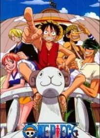

Anime Dialy
Rekomendasi Anime Keren
One Piece

One Piece menceritakan tentang petualangan seorang anak bernama Monkey D. Luffy yang bercita-cita menjadi raja bajak laut dan menemukan "One Piece" setelah terinspirasi oleh Shanks. Sekitar 22 tahun sebelum cerita dimulai, seorang bajak laut bernama Gol D. Roger, atau lebih dikenal sebagai raja bajak laut dieksekusi mati di depan publik. Tepat sebelum kematiannya, ia mengumumkan kepada orang banyak tentang harta miliknya, One Piece, yang diklaim sebagai harta terbesar yang pernah ada.
Kematian Roger memicu dimulainya era "Zaman Keemasan Bajak Laut", ditandai turunnya banyak bajak laut hingga tak terhitung jumlahnya mencari harta karun. Luffy termasuk salah satu yang berniat menemukan One Piece dan menjadi raja bajak laut berikutnya, turun ke laut untuk memulai petualangannya serta mulai mengumpulkan beberapa kru sebagai teman seperjalanan.
Sumber: One Piece Fandom